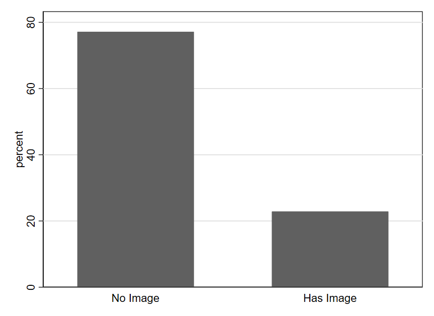
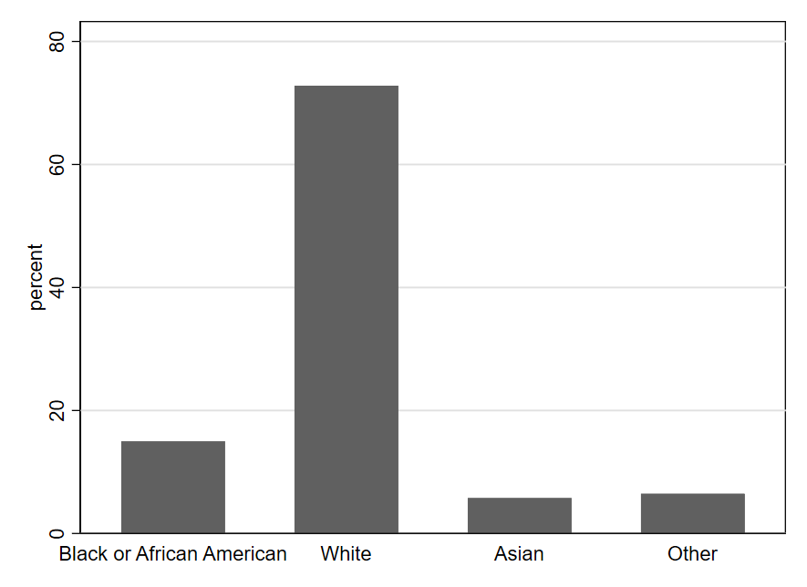
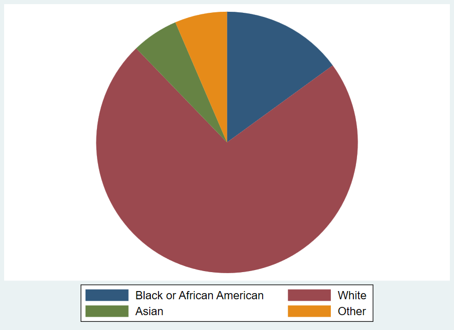
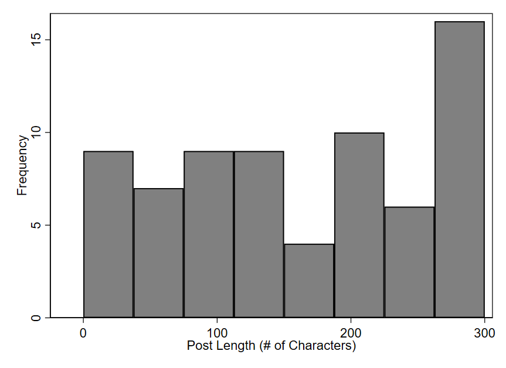
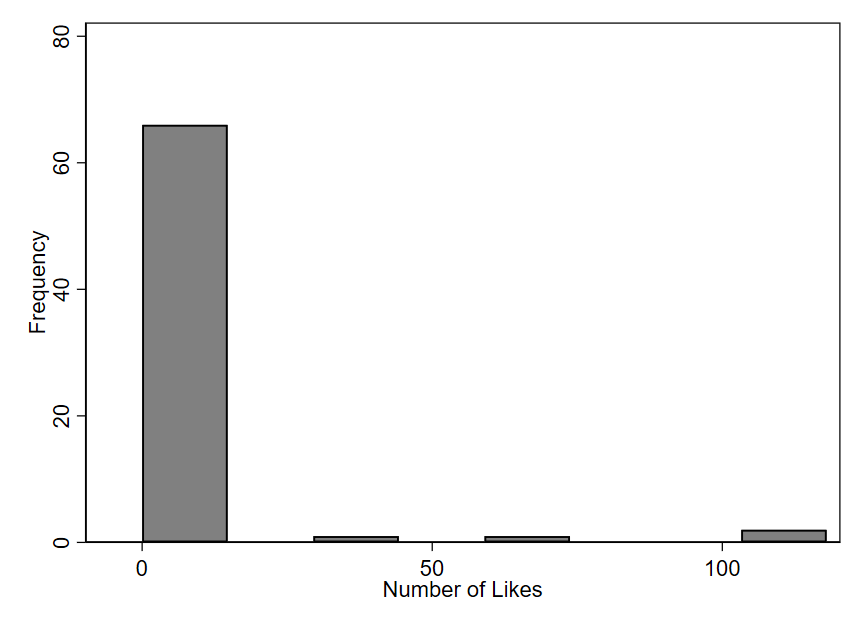
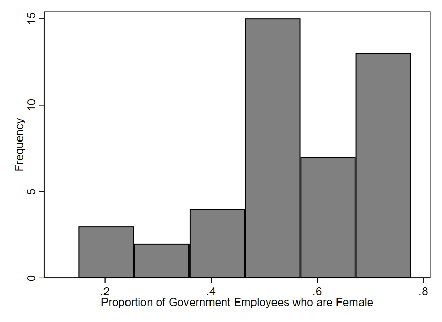
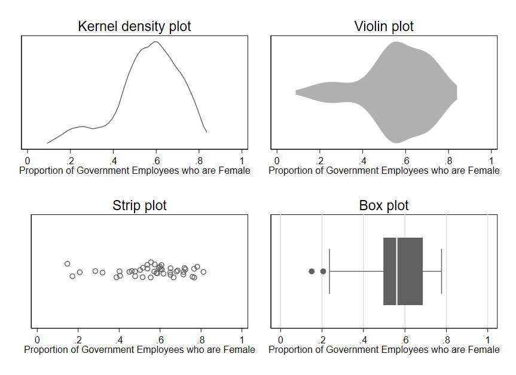

1 Getting Started with Data
Data is everywhere. Yet many of us find numbers intimidating. It can be tempting to assume that someone sophisticated enough to fluently cite numerical information must know what they’re talking about. At the same time, there is a kind of backlash to using numbers to describe the world. The title of the popular book How to Lie with Statistics captures a cynicism many people feel: since statistics can easily trick you, you shouldn’t believe them at all. Such extreme reactions reflect people’s lack of self-confidence in evaluating quantitative information. Because we don’t trust ourselves, we reflexively either dismiss or accept numerical claims—perhaps depending on whether the claim is one we already agree with or the source is one we trust.
Fortunately, statistics is a topic that most anyone can learn. Even if you think you are not a “numbers person,” I am confident you can learn fundamentals that will allow you to critically assess statistical claims. I say this as someone who has spent much of my academic life surrounded by people who lacked confidence in their numerical abilities and yet decided to study social science topics—sometimes not realizing the extent to which they were signing up to work with numbers along the way. Many peers during my time studying for a PhD thought their abilities in math were not strong, but by the time they completed their degrees, they were all exceptionally competent in statistics. It is true that some people learn numerical material more quickly than others. For most people, lots of repetition is required before many statistical concepts are grasped. But I have yet to encounter a student who is unable to learn statistics. If you set your mind to it, you will learn it.
In my opinion, the most important skill for dealing with statistics is critical thinking. While statistics is certainly quantitative, doing statistical analysis does not require you to perform complex math because software will handle the number crunching. Thus, being comfortable with statistics is mostly about developing familiarity with statistical concepts, mastering a few technical details, and thinking carefully about how to best apply statistical tools to real-world data. “Subject-matter expertise,” by which I mean familiarity with the topics (e.g., policy or program area) described by the data, is almost always required for good interpretation of statistical results. Sometimes, a bit of math will help with explaining how a statistic works or gaming out the implications of a statistical result. But even then, most of the math we need for an introductory course is relatively simple arithmetic.
This book will teach you the basics of statistics, with a focus on applications to the social sciences. It is intended for complete beginners, especially those taking an introductory statistics or quantitative methods course at the post-secondary level (e.g., at a college or university). The first half of the book (chapters 1-6) is a crash course on data essentials. It will help you get started using various tools to describe and analyze data. The second half of the book (chapters 7-12) goes into more detail on how to understand statistical tools and use data to learn about the social world. Many of the topics are more abstract than in the first half, but the concepts covered will help you critically evaluate exactly what a dataset can and cannot tell you.
With the emergence of new and powerful forms of artificial intelligence (AI), many people are currently asking how the field of statistics will change going forward. While it is always difficult to predict the future, we are already seeing emerging AI technologies that can effectively perform and interpret many statistical analyses. If a machine can do statistics, you might wonder: what is the point of learning to do statistics yourself? One reason I believe it is still important to learn about statistics is that the quality of statistics-based analysis produced by AI systems can vary widely. Without your own understanding of statistics, it is very difficult to evaluate the quality of an analysis produced by AI. Even if it soon becomes the case that many statistical analyses are carried out almost entirely by AI, I believe it will still be important that humans can understand and critically evaluate AI output. In the future, you might end up using AI tools to help you accomplish statistical analysis that is relevant to your work or personal life. But you will almost certainly be a smarter “supervisor” of the AI tool if you have your own grasp of statistics. Learning is not something you can outsource to AI; you will have to think hard and engage with the material in this text yourself if you want to learn statistics.
In this chapter, we’ll start learning about a few different ways to explore and describe data. First, we’ll learn three questions that highlight some important issues to think through for almost any data analysis. Second, we will discuss some of the basics of visualizing patterns in data. Finally, we will go over the structure of datasets, including key terminology that is used to talk about data.
1.1 Three Questions to Always Ask about Data
To help focus your attention on thinking critically, I encourage you to ask the following three questions whenever you encounter statistical information:
What is being measured?
Who (or what) is in the dataset?
How big are the differences?
1.2 Visualization Basics
Creating simple graphs is often a great first step for getting familiar with a dataset. In this chapter, we will focus mainly on graphing just one variable at a time.
1.2.1 Bar Charts and Pie Charts
One of the simplest graphs is a bar chart, which we can use to depict the frequencies of different values occurring in a dataset. For example, we can visualize how often your friend’s posts include images. From Figure 1.1, we can see that most posts do not contain images. The y-axis, shown on the left edge of the graph, allows us to determine approximate percentages. It appears that a bit fewer than 80% of posts contain no image, while a bit more than 20% of posts do contain images.

For another example, we can look at data from a survey of U.S. government employees. @fig-bar-race shows the racial groups the survey respondents identify with. One can quickly see that the bar for White is larger than all the other bars combined, meaning that most employees responding to the survey are White. We also see that the values of Asian and Other are fairly rare (each occurring in fewer than 10% of employees). Black or African American appear to make up around 15% of the employees responding to the survey.

Another type of graph you can create with this sort of data is a pie chart, using the frequency of each value to create the size of the pie slice. Pie charts visually suggest what we might call a competitive approach to describing the sizes of the different categories: you can’t make one slice bigger without making at least one other slice smaller. We can also call this a “zero-sum” depiction, since there is a finite area (a finite “sum”) in the circle that is divided across the categories. This makes pie charts particularly effective for depicting something like how a budget is spent across different categories (e.g., how much a business spends on paying employees, utility bills, advertising, etc.) since a scarce resource is being divided for different purposes. However, a zero-sum allocation is not always what we wish to emphasize when summarizing a qualitative variable. Pie charts can also be hard to read with certain configurations of data (i.e., when there are too many categories or the slices get too small). Thus, it should come as no surprise that research scientists tend to rely on bar charts more than pie charts for depicting data.

Bar charts and pie charts can also be used to represent things other than the frequency with which different values of a variable occur, even though that is the main way we use them while studying statistics. When you encounter a graph, it is always important to carefully read the titles and labels to make sure you understand exactly what is depicted. A bar graph might, for example, indicate the size of the change (positive or negative) in the budget from 2024 to 2025 for various categories of spending. Or as noted above, you might see the levels for budget categories themselves depicted in a pie chart—highlighting how some categories make up much larger shares of the budget than others. In such cases, the charts would not be telling you how many people (or other units represented by rows of data) record different values of a variable, as in the example graphs shown here.
1.2.2 Graphs for data with many different numeric values
One type of bar chart that is very common in statistics is called a histogram. An example is shown in Figure 1.4, using data on the length of each post by your friend. In a histogram, each bar represents a range of values, known as a “bin.” The x-axis (along the bottom of the graph) shows us the range of values for the publ_sector_size variable being described by each bar. The height of each bar represents how many data points fall within the corresponding bin. In this particular histogram, the y-axis (along the left side of the graph) shows how different heights indicate different numbers of observations. For example, the first bar on the left has a height indicating approximately nine observations. The approximate range shown on the x-axis for this bar is 0 to 40. Therefore, we can approximate that nine of your friends posts are 0-40 characters long. The right-most bar indicates that approximately 16 posts are 260-300 characters long. This right-most bar is also the tallest, perhaps indicating that your friend likes long posts and sometimes struggles with hitting up against the cap of 300 characters on the social media platform they use.

Figure 1.5 displays a histogram for the number of times each post is liked. This graph looks a bit funny: there is one tall bar on the left and three very short bars scattered throughout the rest of the graph. This is because almost all of your friend’s 70 posts have received relatively few likes—between 0 and approximately 15. However, they have occasionally made posts that appear to break out to a somewhat larger audience. The first short bar (going left to right) indicates a small number of posts (less than 5, maybe only 1) has around 40 likes. Another short bar indicates at least one post has received around 60 or 70 likes. And a slightly taller bar indicates occasional posts that have received a bit more than 100 likes.

For another example, we can use data on the proportion of government employees who are female in different countries around the world. Figure 1.6 visualizes this data, which displays a certain asymmetry: the bars on the right half of the graph tend to be taller than those on the left. The x-axis shows the range of proportions seen accross the countries. We can convert a proportion to a percentage by shifting the decimal point two places to the right. So a country where the proportion of government employees who are female is .2 would have 20% female employees. The short bars in the graph indicate that relatively few countries have proportions in the approximate range of .1 to .45; in other words, for a small number of countries, we see that 10-45% of the government workforce is female. Most countries have a government workforce that is more like 45-75% female (the tall bars on the right side of the graph). Thus, it seems that in a majority of the 44 countries included in this dataset, the government employs more females than males.

There are several alternatives to histograms. You can see in Figure 1.7 several different types of graphs being used to depict the same data for the females_publ variable. Each one indicates the relative density of observations across the range of possible values. Much like a histogram, a kernel density (k-density) plot uses height to indicate the frequency with which values occur, but rather than dividing values up into discrete ranges (bins), an algorithm is used to create a smooth, continuous line that is drawn across the values. A violin plot (which can be oriented horizontally or vertically) is somewhat similar but uses thickness rather than height to indicate density of observations across the range of values. A strip plot uses one dot per observation but usually adds some random noise called “jitter” to the data. Without this jitter, dots often stack on top of one another such that the actual density of observations is obscured. Finally, a box plot uses a box to indicate the range of values containing the middle 50% of observations, with other lines indicating other important quantities like the full range of values. Given the importance and complexity of box plots, we will examine them in more detail in the next chapter.

Regardless of which type of plot we use, we see the same asymmetry apparent in the original histogram for females_publ: most of the data lies in the range of .4-.8, with a few observations also occurring in the range of .1-.4.
1.2.3 Best practices for simple graphs
As useful as graphs are, it is also easy to go wrong with data visualization. Here are three guidelines to keep in mind when getting started with graphs.
First, histograms and the related graphs we saw (from Figure 1.7) are typically a good starting point for learning about a variable, but there may be important details that are not apparent from the first graph we look at. For example, while histograms usually provide a nice overview of a variable, the overall shape depicted by the bars in a histogram can sometimes change in surprising ways if we alter the boundaries of the bins.
Second, be careful about using line graphs. We have not used any line graphs yet, but some software packages for data work will prominently suggest line graphs as a visualization option. When working with data showing trends over time, using line graphs makes perfect sense. We will see an example of this below, using data on estimated vaccinated rates over time. But use of line graphs in other contexts (where time trends are not being shown) is often misleading, since the lines suggest connections between points that may not be connected at all in reality.
Third, “keep it simple” is a great mantra to remember for data visualization (and much of data analysis). It is no accident that the graphs we have just reviewed are visually quite simple—maybe even boring. Some software programs will point you toward features like 3-dimensional graphs or using images instead of bars to depict information. While such graphs may look impressive on the surface, the flourishes usually distract from the main point of the graph (and can sometimes even actively mislead the reader).2 Focus on simplicity and clarity in data visualization, not trying to stand out.
1.3 Critically Evaluating Graphs
Graphs are often poorly constructed in ways that can mislead, so it’s always important to think critically and exercise caution when interpreting data visualizations.
Let’s look at some examples and see if any of the Three Questions to Always Ask about Data can help us identify misleading graphs.
Generally speaking, any difference can be made to visually look very large or very small depending on how the axes are drawn. It is all about how “zoomed in” or “zoomed out” you are relative to the range of possible values for the variable.
It is sometimes tempting to create simplistic rules to try to avoid misleading graphs like the one from the prior example. Such rules are generally a bad substitute for carefully thinking through how to best describe the data in front of us. As an example, it is sometimes advised to always including 0 in the y-axis in order to avoid “zooming in” on the y-axis so much that we make small differences appear larger than they really are. Let’s consider this rule in the context of some data on trends in childhood vaccination.
For good visualization, we want differences that are meaningful in reality to be visually noticeable in our graphs. How do we define a “meaningful” difference? There is no universal rule. Typically, subject-matter expertise and careful judgment will be our best guides.
Whenever you see a difference in a graph that “looks big” or “looks small,” take a moment to pause. Look carefully at the numbers on the axes, and think about how to evaluate the third Question to Always Ask about Data: “Based on what I know about this topic and how the variables are measured, how big is this difference? Does my understanding of the numbers match what my eyes see?”
1.4 How Datasets are Structured
Even though graphs are often appealing for exploring data, behind the scenes our data is usually stored in the form of a spreadsheet. Table 1.3 shows part of the dataset describing your hypothetical friend’s social media posts. Each row represents one post, and we call the rows observations. Each column represents one characteristic of the posts. We call the columns variables. Variables allow us to describe whatever it is we care about—concepts such as the length of the post (character count or char_count), how many likes it received (like_count), and whether the post includes an image (has_image). We can easily imagine adding other variables such as the number of times a post was reposted by others, whether the post is a reply to another post, and when the post was made. We call the columns variables because each column displays values of a characteristic that varies depending on which observation we are talking about: post 1 has a length of 56 characters, while the second post is 91 characters long.
Table 1.4 previews a dataset where each observation (row) is a different individual who responded to a survey. We use the term unit of analysis to describe what constitutes one observation in a dataset: in the prior table the unit of analysis was the country, whereas here it is the individual. Other common units of analysis include the organization, the work unit, and the subnational unit (e.g., city or region).
random_id |
race |
hispanic |
sex |
q1 |
q2 |
|---|---|---|---|---|---|
| 194868625278 | White | No | Male | Neither Agree nor Disagree | Neither Agree nor Disagree |
| 152966380283 | White | No | Male | Disagree | Strongly Disagree |
| 146904434378 | Other | No | Female | Agree | Agree |
| 161966059804 | White | Yes | Strongly Agree | Strongly Agree | |
| 133516090099 | Black or African American | No | Male | Agree | Agree |
1.4.1 Types of variables
We also distinguish among different kinds of variables, which will often require different types of analysis.
Quantitative variables are expressed in numbers. The character count and like count variables we examined above are quantitative. All of our examples of histograms also depict quantitative variables, since histograms (and the alternative plot types shown in Figure 1.7) can only be created for quantitative variables.
For qualitative variables, it typically makes more sense to use text than numbers to describe the values. For example, race is a qualitative variable, as shown in the example survey data above. While you may sometimes encounter datasets that record the values of a qualitative variable using numbers (for ease of processing), the assignment of numbers to values will be arbitrary. This is because qualitative variables take on values that are unordered categories (cannot be arranged from least to most). hispanic and sex are also qualitative variables in the example survey data.
A qualitative variable that takes on only two values is called a binary variable. The variables hispanic and sex are binary. For the sex, there is also one blank cell, indicating a missing value. Binary variables often appear in spreadsheets with values shown as 1s and 0s. In some cases, a 1 indicates “yes” while a 0 indicates “no.” For example, in the dataset describing a friend’s social media posts, the variable has_image is coded as a 1 if “yes, this post has an image” and 0 if it does not.
There is also a third type of variable called an ordinal variable, where values can be arranged in order but cannot be easily quantified. This type exists in a somewhat grey zone between quantitative and qualitative. Many surveys utilize Likert scales, which allow respondents to choose from a range of options along a continuum (e.g., strongly disagree, disagree, agree, strongly agree). Variables q1 and q2 in the survey data example use this kind of scale. For q1, people are responding to the statement “I am given a real opportunity to improve my skills in my organization.” q2 asks them to indicate whether they agree that “I feel encouraged to come up with new and better ways of doing things.”
Likert scales result in ordinal variables: while we can arrange response options from most agreement to least agreement, it is not clear how to assign precise numbers because we don’t know if the distances between response options are equal. If “strongly disagree” is a 1 and “disagree” is a 2, should “neither agree nor disagree” be a 3? Or a 4? Maybe 3.5? It is difficult to say what numbering scheme would most accurately represent respondents’ attitudes because this is an ordinal variable. In the example provided earlier in this chapter using the q2 variable, we simply counted up by 1 as we went across the response options. Whenever we take a simplistic approach like this, we’re not sure if these numbers are really the ideal ones to assign, but they may still be a reasonable approximation of how attitudes might be mapped to numbers. And by assigning precise numbers to the response options, we enable treating this variable as quantitative. This is beneficial because quantitative variables are often easier to work with than qualitative variables.
1.4.2 Types of datasets
So far, the datasets we have seen in spreadsheet form are what we call cross sections. Each observation is a different unit. There are also time series datasets, where each observation is a different point in time. Our Childhood Vaccination Rates example was about a time series dataset, and we can see part of this dataset in spreadsheet form in Table 1.5. With time series data, the unit of analysis could be the year (as in this example), the quarter, the month, the week, the day, etc.
year |
percent_vaccinated |
|---|---|
| 2011 | 94.7 |
| 2012 | 94.1 |
| 2013 | 94 |
| 2014 | 94 |
You may also sometimes encounter more complicated data structures that combine the attributes of cross-sectional and time series data. A panel dataset tracks multiple units over multiple time periods. For example, a dataset might track several countries over several years (each row describing one country in one year). A repeated cross section is similar, except that different units are observed in each time period. A survey that is conducted annually but where the respondents are different each year is a repeated cross section.
1.4.3 Varying terminology
Unfortunately, there are many cases where statistical terminology is inconsistent from one source to the next. Since you will probably encounter research reports or articles that use different terminology than I use here, it is important to be familiar with these alternative terms:
Qualitative variables can also be called categorical variables or nominal variables.
Binary variables are often called dummy variables.
Time series data is sometimes called longitudinal data.
Sources also disagree on whether ordinal variables should be considered a subcategory of quantitative or qualitative variables. For this text, I consider ordinal variables to be a distinct third category, but different authors classify them differently.
1.5 Exercises
What are the three Questions to Always Ask about Data?
Are pie charts or bar charts more popular among scientists for depicting a qualitative variable?
What are three best practices for creating graphs (as described in this chapter)?
Why is it important to carefully read the labels on a graph’s axes?
What types of variables are
voter_registration,follows_news, andyears_living_in_statein the table below?id voter_registration follows_news years_living_in_state 1 registered somewhat agree 26 2 ineligible strongly disagree 51 3 unregistered strongly agree 2 4 registered somewhat agree 34 5 registered somewhat disagree 44 6 unregistered strongly agree 11 What is the unit of analysis in the table from question 2?
If I have a dataset where the unit of observation is the week, what type of dataset do I have?
What is another name for a qualitative variable?
Year 1 of the Nonprofit Trends Longitudinal Survey Public Use Data Files. https://doi.org/10.7910/DVN/T4OT1J↩︎
See, for example, violations of the “principle of proportional ink”: https://callingbullshit.org/tools/tools_proportional_ink.html↩︎
Pandey, A., & Galvani, A. P. (2023). Exacerbation of measles mortality by vaccine hesitancy worldwide. The Lancet Global Health, 11(4), e478-e479. https://doi.org/10.1016/S2214-109X(23)00063-3↩︎
Data from the U.S. Centers for Disease Control and Prevention.↩︎
2024 U.S. Federal Employee Viewpoint Survey (public domain)↩︎